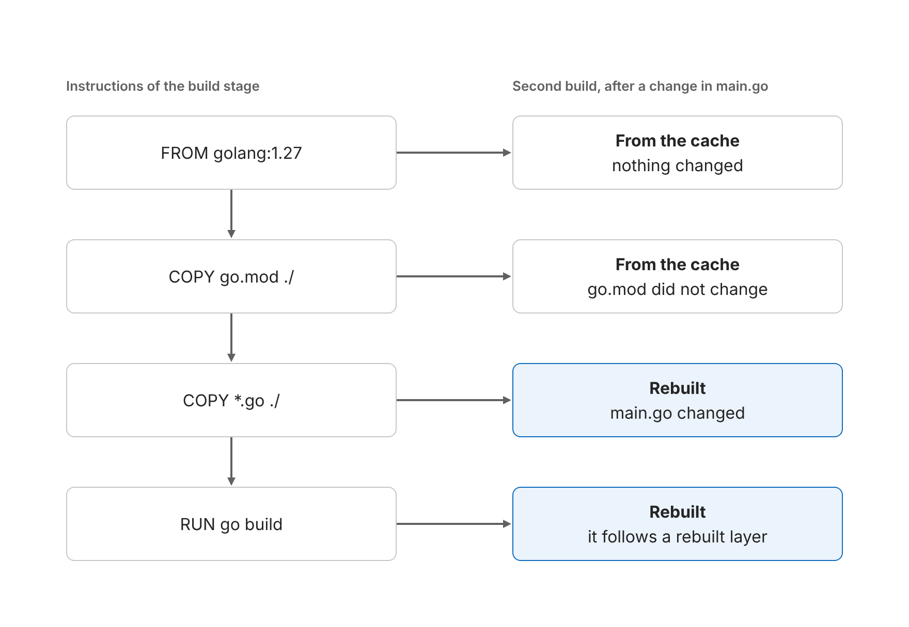
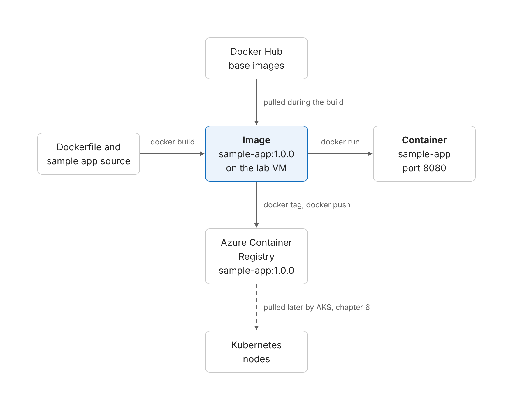

Chapter 1: containers
This chapter still describes the former Azure lab VM. It is being rebuilt for the environment of the Setup page. Its lab already runs there, with the local registry on localhost:5001 in place of Azure Container Registry.
Kubernetes and OpenShift run containers, so everything in the rest of the course builds on this chapter. You will package the course sample app as a container image, run it on the lab VM, and publish it to a registry in Azure.
What you will be able to do
- Explain the difference between an image and a container, and between a tag and a digest.
- Write a Dockerfile with two stages that produces a small image running as a non-root user.
- Build, run, inspect and debug a container with the Docker command line: ports, logs, exec, history.
- Push an image to Azure Container Registry and prove that the registry holds exactly the image you built.
Before you start
Prerequisites
- The setup done: the readiness report,
./course check, has no[FAIL]. - The lab VM started (
./course up) and an SSH session open on it (./course connect), from the kit folder on your own computer.
Time needed
About 2.5 hours: 60 minutes of reading and 90 minutes for the lab.
Estimated cost
Prices from the Azure Retail Prices API, pay-as-you-go, region Sweden Central, in EUR, looked up on 13 November 2026.
| Item | Price | For this chapter |
|---|---|---|
| Lab VM, about 2 hours | 0.0826 per hour | 0.17 |
| Azure Container Registry, Basic tier, 10 GiB of storage included | 0.1431 per day | 0.14 if you delete it the same day |
| Disk and public IP of the lab VM | about 0.25 per day | 0.25 |
About 0.56 EUR in total. course start 01 prints the registry price for your own region and currency before it creates anything. course clean 01 deletes the registry at the end of the chapter, and a new one comes back in chapter 6.
Concepts
Images and containers
A container is a normal Linux process that the kernel isolates from the rest of the machine. Two kernel features do the work: namespaces give the process its own view of the file system, the network and the process list, and control groups (cgroups) limit how much CPU and memory it can use. There is no second operating system inside, which is why a container starts in a fraction of a second, unlike a VM.
An image is the template a container starts from. It holds a file system (the app and everything it needs) and metadata: which command to run, which user to run it as, which port the app listens on. An image never changes. When a container starts, the engine adds a thin writable layer on top of the image for that container only. When the container is removed, that layer is gone.
The program that builds images and runs containers is a container engine. The lab VM uses Docker Engine. Podman, which you meet again with OpenShift in chapter 7, is another one. Both follow the Open Container Initiative (OCI) image format, so an image built by one runs on the other, and on Kubernetes. Docker overview, OCI image specification
you start three containers from the same image and write a file in one of them. Do the two others see it? Does the image change?
No and no. Each container has its own writable layer on top of the shared, read-only image. The file exists only in the writable layer of the container that wrote it, and disappears when that container is removed.
Layers and the build cache
An image is a stack of layers. Each instruction in a Dockerfile that changes the file system, such as COPY or RUN, produces one layer that records only the changes. Layers are identified by their content, so two images based on the same parent share its layers on disk and in the registry. Understanding image layers
When you build again, Docker reuses a layer from its cache if the instruction and its inputs have not changed. As soon as one layer changes, every layer after it is rebuilt. The order of the instructions therefore decides how fast a rebuild is: put what changes rarely (the base image, the dependency list) first, and what changes often (your code) last. Docker build cache

docker image history <image> lists the layers of an image with the instruction that created each one and its size.
a Dockerfile copies all the source code, then downloads the dependencies. You change one line of code. What is rebuilt?
The copy of the source code changed, so that layer and every layer after it are rebuilt, including the slow dependency download. Copying the dependency list first, downloading, and only then copying the code keeps the download in the cache.
The Dockerfile
A Dockerfile is a text file with one instruction per line. These are the instructions this chapter needs. Each one is described in the Dockerfile reference.
| Instruction | What it does |
|---|---|
FROM <image> AS <name> |
Starts a stage from a base image, and optionally names it |
WORKDIR <path> |
Sets the folder where the next instructions run |
COPY <source> <destination> |
Copies files from the build context (the folder you build from) into the image |
COPY --from=<stage> <source> <destination> |
Copies files from an earlier stage |
ARG <name>=<default> |
Declares a value you can pass at build time with --build-arg |
RUN <command> |
Runs a command during the build, for example a compiler |
USER <uid>:<gid> |
Sets the user the container runs as |
EXPOSE <port> |
Documents the port the app listens on. It does not open or publish anything |
ENTRYPOINT ["<executable>", "<argument>"] |
Sets the program the container runs |
ENTRYPOINT has two forms. The exec form is a JSON list, as in the table: the program starts directly and is the first process of the container, so it receives the signal that docker stop sends to ask it to stop. The shell form, ENTRYPOINT /sample-app, starts the program as a subcommand of /bin/sh -c. The program is then no longer the first process and does not receive that signal, so Docker waits, then kills it. An image built from scratch has no shell to run the shell form at all. Use the exec form. Shell and exec form
A multi-stage build uses several FROM instructions. The first stage holds the full toolchain and compiles the app. The last stage starts from a small base and copies only the result from the first one. Everything else stays behind and never reaches the final image. Multi-stage builds
The smallest possible base is scratch, an empty image. It works for a program that is a single static binary, such as the sample app built with CGO_ENABLED=0. It has no shell, no package manager and no user database, which also means there is very little for an attacker to use. Distroless images, which add only certificates, time zone data and a user list, are a common middle ground.
A .dockerignore file next to the Dockerfile lists files that must never be sent to the build, such as local binaries or secrets.
why does a two-stage build make the final image smaller, when it runs the same compiler?
The compiler runs in the first stage, and the final image only receives the files copied from it with COPY --from. The toolchain, the source code and the build cache stay in the first stage, which is discarded.
Tags and digests
An image name has up to three parts: <registry>/<repository>:<tag>. For example, in myregistry.azurecr.io/sample-app:1.0.0, the registry is myregistry.azurecr.io, the repository is sample-app and the tag is 1.0.0. Without a registry, Docker assumes Docker Hub. Without a tag, it assumes latest, which is only a default name, not a guarantee of anything recent.
A tag is a label that someone can move to another image at any time. A digest, such as sha256:4f3c..., is computed from the content of the image. It cannot move: the same digest always means the same bytes. Pulling <repository>@<digest> gives you exactly the image you tested. Pull an image by digest
docker tag adds another name to an existing image. It copies nothing: both names point to the same image ID.
a colleague says "we deploy sample-app:1.0.0, so we always run the same code". What is wrong with that?
Anyone with push rights can push a different image under the same tag, so 1.0.0 may not be the image you tested. Only the digest identifies the content. Teams that need certainty deploy by digest, or protect tags in their registry.
Registries and Azure Container Registry
A registry stores images and serves them to anything that needs to pull them: your VM, a Kubernetes cluster, a build pipeline. Docker Hub is the public default. Azure Container Registry (ACR) is a private registry in your subscription. Azure Container Registry
Each registry has a login server, <registry name>.azurecr.io. To push to it, you prefix the image name with the login server, sign in, and run docker push. On the lab VM, az login --identity signs the Azure CLI in with the VM's managed identity, then az acr login --name <registry name> exchanges that identity for a registry token that Docker uses. No password is ever typed or stored. The AcrPush role that course up gave the VM is what allows the push. Authenticate with a managed identity
The registry of this chapter uses the Basic tier, the smallest one, with 10 GiB of storage included in the daily price. Its admin account, a shared user name and password, stays disabled: every push is then traceable to an identity. ACR service tiers
Docker Hub limits how many pulls anonymous users can make in a given time. The lab only pulls a few images, but a classroom behind one public IP address can hit the limit. Docker Hub usage and limits

your push fails with an authentication error, although az acr login succeeded. Which name did you probably push?
An image name without the login server prefix, such as sample-app:1.0.0. Docker then tries Docker Hub, where you are not signed in. The name must start with <registry name>.azurecr.io/.
Running containers
These commands cover the lab. Each one has a page in the Docker CLI reference.
| Command | What it does |
|---|---|
docker run -d --name <name> -p <host port>:<container port> <image> |
Starts a container in the background (-d), names it, and publishes a container port on a port of the VM |
docker ps |
Lists running containers. docker ps -a also lists stopped ones |
docker logs <name> |
Shows what the app wrote to its standard output and error. Add -f to follow |
docker exec -it <name> <command> |
Runs another command inside a running container |
docker stop <name>, docker rm <name> |
Stops, then removes a container |
docker image ls, docker image inspect <image> |
Lists images, shows the metadata of one image |
Publishing a port is what makes the app reachable. EXPOSE in the Dockerfile only documents the port, while -p 8080:8080 actually forwards port 8080 of the VM to port 8080 of the container.
Containers log to standard output instead of files, and the engine collects those lines. Kubernetes does the same, so kubectl logs in chapter 2 works like docker logs.
docker exec needs the command to exist in the image. In an image built from scratch there is no shell, so docker exec -it <name> sh fails. That is expected, and is one more reason why such images are hard to attack.
the container runs, docker ps shows it, but curl http://localhost:8080 cannot connect. What do you check first?
That the port is published: docker ps shows a PORTS column such as 0.0.0.0:8080->8080/tcp. Without -p, the app listens inside the container only. Then check docker logs to see whether the app started and on which port.
Running as a non-root user
Unless the image says otherwise, the process in a container runs as root (user ID 0). The kernel isolation limits what it can reach, but if an attacker breaks out of the container, being root makes everything worse. A USER instruction makes the app run as an ordinary user. Dockerfile USER
Use a numeric user ID, such as 65532, rather than a name. Kubernetes can check at start-up that a container does not run as user 0 (runAsNonRoot, chapter 4). Security context That check needs a number it can compare: with a user name, the container is refused with the error "image has non-numeric user". Red Hat knowledge base article on this error
OpenShift goes further: by default it runs each container with an arbitrary user ID chosen by the platform, in the root group (group ID 0), whatever the image says. Images must therefore work for any user ID, never need root, and listen on a port above 1023, because ports below 1024 need root. The sample app listens on 8080 and writes nothing to disk, so it already fits. Adapting containers to run on OpenShift (written in 2020, checked again in chapter 7)
why can the sample app not listen on port 80 when it runs as user 65532?
On Linux, binding to a port below 1024 needs root privileges, or a specific capability. A non-root process listens on a higher port, such as 8080, and the platform maps port 80 to it when needed, as -p 80:8080 would.
Image size
Every node that runs your app pulls the image first, and every byte in it is something to patch and scan. A small image starts faster and leaves less for an attacker to use. The main levers are a multi-stage build, a small base image, a .dockerignore file, and cleaning up in the same RUN instruction that created the files. Building best practices
For a static Go binary, the final image can be a few megabytes. The validation script warns above 100 MB.
you delete a large file in a RUN instruction placed after the COPY that added it. Does the image get smaller?
No. The file stays in the layer created by COPY, and the later layer only records that it was deleted. Avoid copying it in the first place, or use a stage that is discarded.
Knowledge check
Pick an answer, then check it. The explanation opens below each question.
-
What does
EXPOSE 8080in a Dockerfile do?Answer and explanation
Answer: C. It records that the app listens on 8080, as documentation and metadata.
EXPOSEadds the port to the image metadata, where tools and people can read it. It does not publish the port on the host, it does not touch any firewall, and it does not change the port the app listens on. Publishing happens at run time with-p. See the Dockerfile reference. -
Which reference always points to the same image content?
Answer and explanation
Answer: C.
sample-app@sha256:<digest>.A digest is computed from the content of the image, so it always designates the same bytes. Tags, including
latestand1.0.0, are labels that can be moved to another image. A name without a tag meanslatest. See Pull an image by digest. -
In a two-stage build, what ends up in the final image?
Answer and explanation
Answer: B. The base image of the last stage plus the files copied into it.
Only the last stage becomes the image. Earlier stages are used during the build and then discarded, unless the last stage copies files from them with
COPY --from. See Multi-stage builds. -
On the lab VM, how does
docker pushto your registry get its credentials?Answer and explanation
Answer: B. From
az acr login, which uses the token of the identity the Azure CLI is signed in with.On the lab VM the Azure CLI is signed in with the VM's managed identity.
az acr loginturns that sign-in into a registry token for Docker. The admin account is disabled,.envnever holds a password, and SSH keys have nothing to do with registries. Even a registry in your own subscription requires authentication. See Authenticate with a managed identity. -
Why should the image set
USER 65532:65532rather thanUSER appuser?Answer and explanation
Answer: B. A numeric ID lets Kubernetes verify that the container does not run as root, and needs no user database in the image.
User names are allowed in a Dockerfile, but a name has to be looked up in the image's user database, which
scratchdoes not have, and Kubernetes refuses to start arunAsNonRootcontainer whose image user is a name, because it cannot verify it. The ID does not change the image size, and OpenShift picks its own arbitrary ID anyway. See Configure a security context.
Lab
The lab sheet holds this lab on one page, for a second screen or for printing.
Goal
Package the sample app as a small container image that runs as a non-root user, run it on the lab VM, and publish it to your chapter registry.
Tasks
Work on the lab VM, in ~/work/01-containers/sample-app. The validation script follows the same four stages.
- Write a file called
Dockerfilenext tomain.go, with two stages. The first stage compiles the app with thegolangimage. The last stage receives only the binary, sets a numeric non-root user, declares port 8080 and starts the app. The version reaches the app at build time, through a build argument.Hint 1, where to look
The Dockerfile section of this chapter lists every instruction you need:
FROM,WORKDIR,COPY,ARG,RUN,COPY --from,USER,EXPOSEandENTRYPOINT. The sample app page gives thego buildcommand with the version flag.Hint 2, the shape of the answer
First stage: start from the
golangimage and give the stage a name withAS, copygo.modand the Go files, declare anARGfor the version, and rungo buildwithCGO_ENABLED=0and the-ldflagsoption, writing the binary to a path you choose. Last stage: start fromscratch, copy the binary from the first stage, thenUSER,EXPOSEandENTRYPOINTin the exec form. - Build the image and tag it
sample-app:1.0.0, with the version set to 1.0.0. List its layers withdocker image history sample-app:1.0.0and name the instruction that created each one.Hint 1, where to look
docker buildtakes a tag, a value for eachARG, and the folder to build from as its last argument. The tables in Running containers and in Tags and digests show the options.Hint 2, the shape of the answer
The command has this shape:
docker build --build-arg <name>=<value> -t <name>:<tag> <folder>. Run it from the folder that holds the Dockerfile, so that the folder is a dot. - Start a container named
sample-appfrom the image, in the background, with port 8080 of the container published on port 8080 of the VM. Call/and/healthzwithcurl, then read the container logs and match each line with the request that produced it.Hint 1, where to look
docker runneeds three options here: one to run in the background, one to name the container and one to publish a port. The table in Running containers lists them.Hint 2, the shape of the answer
The shape is
docker run --detach --name <name> --publish <VM port>:<container port> <image>. If the name is already taken, remove the old container first withdocker rm --force <name>. - Sign Docker in to your chapter registry with
az acr login, tag the image with the login server of the registry, and push it.Hint 1, where to look
The registry only accepts an image whose name starts with its login server, and Docker has to be signed in first. See Registries and Azure Container Registry.
Hint 2, the shape of the answer
Three commands:
az acr login --name <registry name>,docker tag <local image> <login server>/<name>:<tag>, thendocker pushwith that new name. The registry name is the login server without.azurecr.io.
Useful starting points, without giving the solution away: the sample app page explains how to set the version at build time, the Concepts section above lists every instruction and command you need, and the official golang image on Docker Hub provides the Go toolchain for the build stage.
Acceptance criteria
course check 01 checks every line below. A criterion that is not met is a [FAIL], unless the line says that it is a warning.
Stage 1, the Dockerfile:
- The file is
~/work/01-containers/sample-app/Dockerfileand has at least two stages. - Every base image names a version. A missing tag or
latestis a warning. - The last stage is not built on the
golangimage and takes the binary from an earlier stage withCOPY --from. Copying the whole build folder into it is a warning. - The last stage sets a numeric non-root
USER(a user name is a warning) and declares port 8080 withEXPOSE. - The last stage has a start command in the exec form. The shell form is a warning.
- The version goes from a build argument to
-X main.version. A version written into the file is a warning.
Stage 2, the image:
- A local image named
sample-app:1.0.0exists. - It runs as a non-root user and declares port 8080.
- It starts the app directly. A start through a shell is a warning.
- It is 100 MB or less. Above that is a warning.
Stage 3, the container:
- A container named
sample-appruns from the currentsample-app:1.0.0image, as a non-root user. - Port 8080 of the container is published on port 8080 of the VM.
GET /healthzanswers 200, andGET /reports"version":"1.0.0".
Stage 4, the registry:
- Your current image also carries the name of your chapter registry.
- The registry holds
sample-app:1.0.0, with the same digest as your local image.
Live tests, only with --deep, on a temporary container:
- The app answers 200 on
/healthzwhen it starts with another user ID, as it will on OpenShift. docker stopends the app within 5 seconds with exit code 0. Anything else is a warning.
Checked by you, because no script can:
- You wrote the
Dockerfileyourself. - You can say which request produced each line of the container logs.
- You can name the instruction behind each layer listed by
docker image history sample-app:1.0.0.
Run setup, validate and teardown
In your SSH session on the lab VM:
On the lab VM (bash)
# 1. Setup: creates the registry and copies the sample app to ~/work
course start 01
# 2. Do the tasks. The guided check follows you: task, check, hints
course check 01 --guided
# 3. Full report at the end. It changes nothing
course check 01
# 4. Optional: the full report with the live tests
course check 01 --deep
# 5. Clean up, once the report passes: removes the container and the registry
course clean 01
course start 01 signs the Azure CLI in with the VM's managed identity, creates the registry with Terraform from its Terraform file, now kept in the extras of the kit, and prints its login server. Terraform signs in with the same identity and keeps the state of the registry in the storage account that course up created, so course clean 01 deletes exactly what course start 01 created. Keep the local images when you are done: chapter 2 uses them.
Each task has two hints, to open one at a time. If you are still stuck after 20 minutes, compare with the reference solution. course solution 01 copies it into your work folder after asking, and keeps your own file aside.
How the validation works
The guided check shows one stage at a time: the task, then where you stand. Do the task in a second terminal, which you open from your own computer with ./course connect, then press Enter to check. A check that fails comes with a hint. Quit with q whenever you like: the script keeps no state and reads your work each time, so the next run resumes at the first stage that does not pass.
The full report runs every stage at once. Each line is a [PASS], a [FAIL] with a hint, a [WARN] for something that works but that you should improve, or a [SKIP] for a live test that was left out. The exit code is 0 when no check fails. course check 01 --stage 2 reports on one stage only.
The report and the guided check are read-only: they read your Dockerfile, inspect Docker and the registry, and send GET requests. Only --deep starts something: a temporary container from your image, which it stops and removes. It never touches your own container, your image or your Azure resources.
Break it and fix it
Once the lab passes, practise the other half of the job: finding out why something that worked no longer does. course break 01 puts one of four faults into your running container, and tells you only what a user would report.
On the lab VM (bash)
# 1. Inject one fault, after a confirmation
course break 01
# 2. Investigate, then say what the cause is
course break 01 --diagnose
# 3. Repair it, then confirm
course check 01 --stage 3
# Or give up and put the lab back as it was
course break 01 --restore
Investigate with docker ps, docker logs and docker inspect. Do not run course check 01 before you have a diagnosis, because its report names the fault. Each run of course break 01 injects another fault, until you have seen them all. The script only stops or replaces the sample-app container. It never touches your image, your Dockerfile or Azure. Do this before course clean 01, which removes the container.
Clean up and cost check
- Run
course clean 01on the lab VM once the full report passes. It removes thesample-appcontainer, deletes the registry and lists what is still taggedcourse=aro-k8s. Whatcourse upcreated, the lab environment and the storage of the Terraform state, should be the only items left. - Keep the local images on the VM. Chapter 2 loads
sample-app:1.0.0into Kubernetes. - From your own computer, deallocate the VM:
./course stop. - The next day, Cost analysis filtered on
chapter=01should show one day of Basic registry, about 0.14 EUR.
Sources
Prices: Azure Retail Prices API, queried on 13 November 2026 with serviceName eq 'Container Registry' and armRegionName eq 'swedencentral', currency EUR.
- Docker overview
- Understanding image layers
- Docker build cache
- Dockerfile reference
- Multi-stage builds
- Building best practices
- Docker CLI reference
- Pull an image by digest
- Docker Hub usage and limits
- Open Container Initiative image specification
- Introduction to Azure Container Registry
- Azure Container Registry service tiers
- Authenticate to ACR with a managed identity
- ACR roles and permissions
- Configure a security context for a pod or container
- Red Hat knowledge base: container has runAsNonRoot and image has non-numeric user
- Adapting Docker and Kubernetes containers to run on Red Hat OpenShift
- Go 1.27 release notes